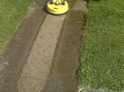

Concrete Cleaning for Concrete Driveways, Walkways and Sidewalks

Cleaning concrete is one of the hardest task in the pressure washing trade. It is very porous which allows dirt and other debris to bed deep into the concrete, resulting in a situation where high powered commercial pressure washers accompanied by professional concrete cleaners are the only sure means of removal. Another difficulty related to concrete cleaning is the physical conditioning to handle large projects like cleaning concrete driveways.
If all of this is starting to sound like anything but fun, then you are starting to get the picture of what it takes to clean concrete. That is why it's better to avoid this type of DIY project. That is unless you just like hard work and you've got commercial power washing equipment laying around or don't mind dumping a few hundred bucks on renting the equipment and buying the cleaners to do it yourself. Otherwise, you should contact a professional who is properly equiped and has the experience and training to do the job and save you the time and effort.
You should consider all of the things described above and also the amount of time it will take to do this type of chore before jumping on a concrete cleaning job yourself. If you don't have at least a weekend to devote to a project like cleaning your driveway, walkways and sidewalk, then don't start tackle it on your own; call a concrete cleaning contractor to come to your home or office and provide you with an estimate for performing the work. In most cases, this will actually save you money and allow you to continue on with your day, just like any other.
Licensed and Insured
NJ Contractors Lic # 13VH03803600
| Our Service Area: | ||
| 07470 wayne nj | 07508 north haledon nj | 07444 pompton plains nj |
| 07474 wayne nj | 07538 haledon nj | 07456 ringwood nj |
| 07477 wayne nj | 07508 haledon nj | 07511 totowa nj |
| 07405 kinnelon nj | 07420 haskell nj | 07512 totowa nj |
| 07058 pinebrook nj | 07035 lincoln park nj | 07082 towaco nj |
| 07424 west paterson nj | 07424 little falls nj | 07465 wanaque nj |
| 07403 bloomingdale nj | 07045 montville nj | 07457 riverdale nj |
| 07405 butler nj | 07436 oakland nj |
|
| 07004 fairfield nj | 07440 pequannock nj |
|
| 07417 franklin lakes nj | 07442 pompton lakes nj |